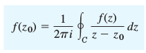
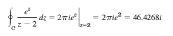

Semana 2 - Integrales Complejos
Fórmula de integral de Cauchy
Resultados importantes: toda función analítica tiene derivadas de cualquier órden y puede expresarse como serie de potencia (serie de Taylor). De esta forma una función analítica la podemos escribir:
f(z) = \sum_0^{\infty} \frac {f^{(n)} (z_0)}{n !} (z - z_0)^n
Sea f(z) analítica en un dominio simplemente conexo D. Para cualquier punto z0 en D y cualquier camino cerrado simple C en D que encierre a z0 se tiene:


con la integral tomada en sentido antihorario
Ejemplo: para cualquier contorno C que contenga a z=2

Ejemplo 2:

Obra publicada con Licencia Creative Commons Reconocimiento 4.0